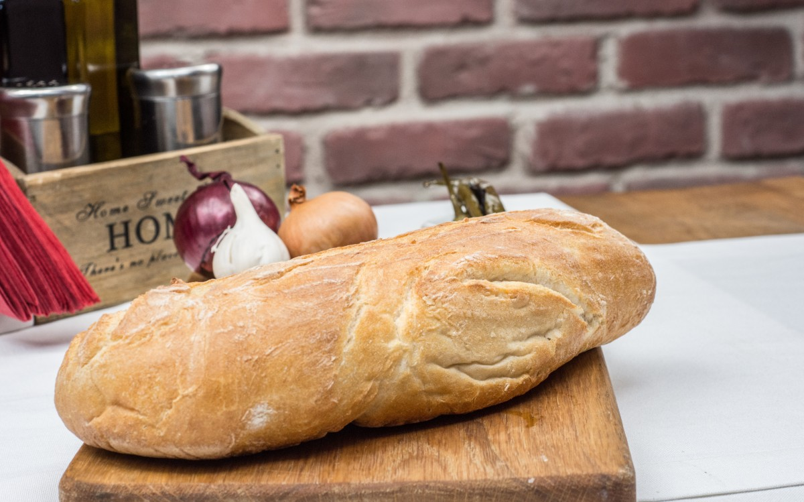

Pão simples

Ingredientes:
500g de farinha de trigo branca
300ml de água morna
100g de fermento natural ativo
10g de sal
Modo de preparo:
Misture a farinha, a água e o fermento natural em uma tigela grande.
Sove a massa por 10 minutos, até que fique lisa e elástica.
Cubra a tigela com um pano úmido e deixe a massa crescer em local aquecido por 4-6 horas, ou até dobrar de tamanho.
Despeje a massa em uma superfície enfarinhada e dobre-a algumas vezes para remover o ar.
Modele a massa em um formato de pão e coloque-a em uma forma enfarinhada.
Cubra a forma com um pano úmido e deixe a massa crescer por mais 2-3 horas, ou até dobrar de tamanho.
Pré-aqueça o forno a 250°C.
Faça cortes na superfície do pão com uma faca afiada.
Asse o pão por 30-40 minutos, ou até que esteja dourado e crocante.
Deixe o pão esfriar completamente antes de fatiar.
Dicas:
Use farinha de trigo de boa qualidade.
A temperatura da água deve estar entre 25°C e 30°C.
Se o fermento natural não estiver ativo, ele não fará a massa crescer.
O tempo de crescimento da massa pode variar dependingo da temperatura ambiente.
Você pode adicionar outros ingredientes à massa, como ervas, especiarias ou frutas secas.
Observações:
Esta receita é apenas um guia. Você pode precisar ajustar os ingredientes e o tempo de cozimento de acordo com o seu forno e as suas preferências.
Fazer pão com fermento natural exige tempo e paciência. Não desanime se o seu primeiro pão não ficar perfeito. Continue praticando e logo você estará fazendo pães deliciosos.